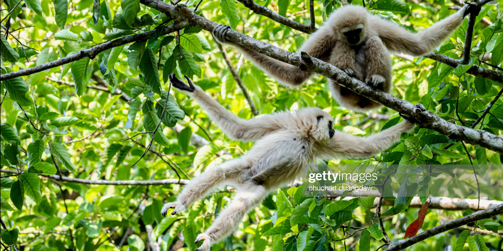
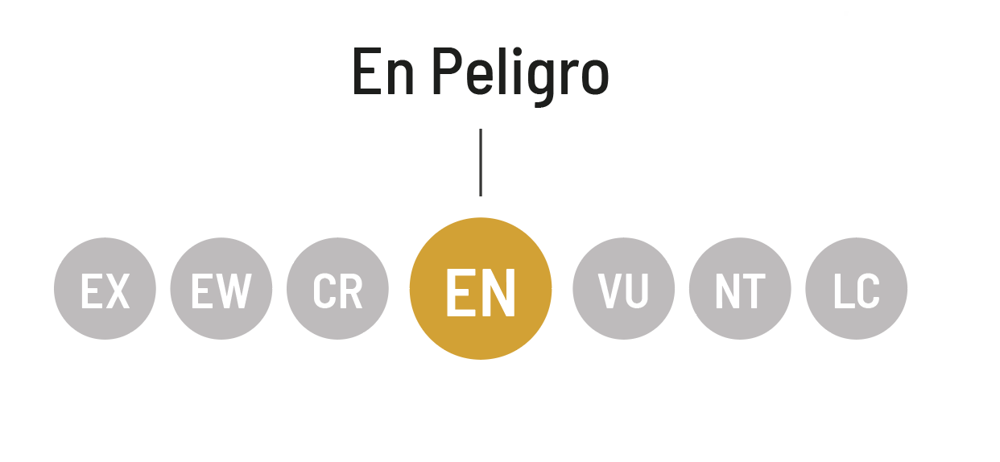
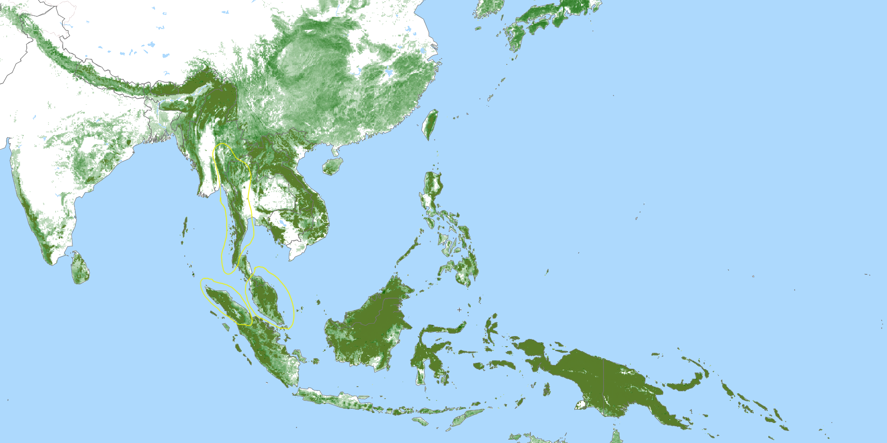
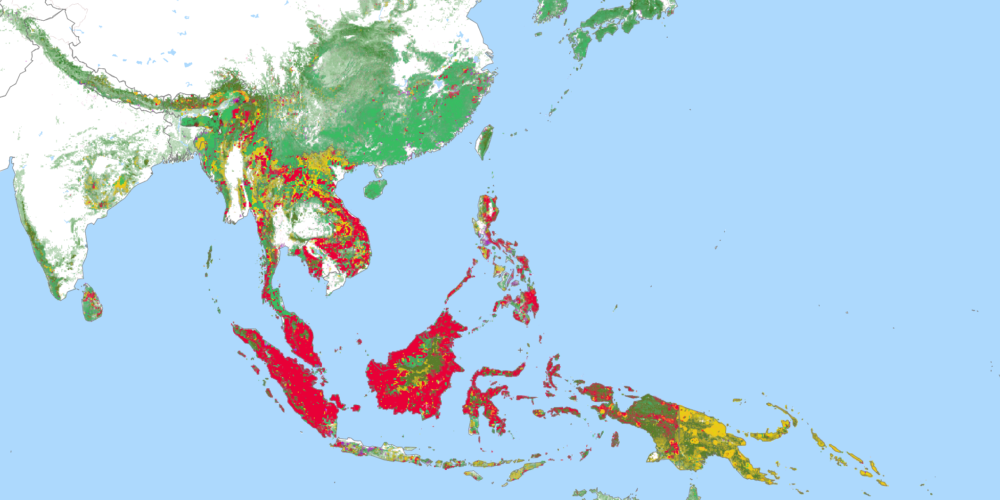

Presencia

Hábitat Natural
Selvas del sudeste asiático

Estado de Conservación
El estado de conservación es una medida de la probabilidad de que una especie continúe existiendo en el presente o en el futuro cercano, tomando en cuenta el volumen de la población actual, la tendencia demográfica, la existencia de depredadores u otras amenazas que modifiquen su hábitat.
La clasificación para los estados de conservación es elaborada por la Unión Internacional para la Conservción de la Naturaleza, que compila la Lista Roja de especies amenazadas: Vulnerable (VU); En peligro (EN) y En peligro crítico (CR).
Selva del sureste asiático
Al ser animales con una alta especialización a su entorno, con una anatomía que le permite moverse por el dosel dem bosque a gran velocidad y sin mucho esfuerzo gracias a sus extremidades superiores que con más largas en comporación con el ser humano, lo que le permite una ejecusión del movimiento pendular usando la gravedad y distribución del peso para obtener una gran movidad. Los gibones en el suelo se mueven con dificultad y no saben nadar, esto hace que cuando en el bosque se producen claro por la desforestación y tala, los gibones quedan aislados.
Amenazas de su hábitat
Simbología de las amenazas de su hábitat natural
- Bosque Primario
- Desforestación
- Agricultura
Estos representativos moradores de los árboles están entre los primates con mayor peligro de extinción de toda la faz del planeta. Su hábitat está desapareciendo a una velocidad vertiginosa y a menudo son capturados y vendidos como mascotas o masacrados para uso en la medicina tradicional. Todas las familias de gibones, menos una, aparecen en la lista de especies amenazadas o en grave peligro de extinción.